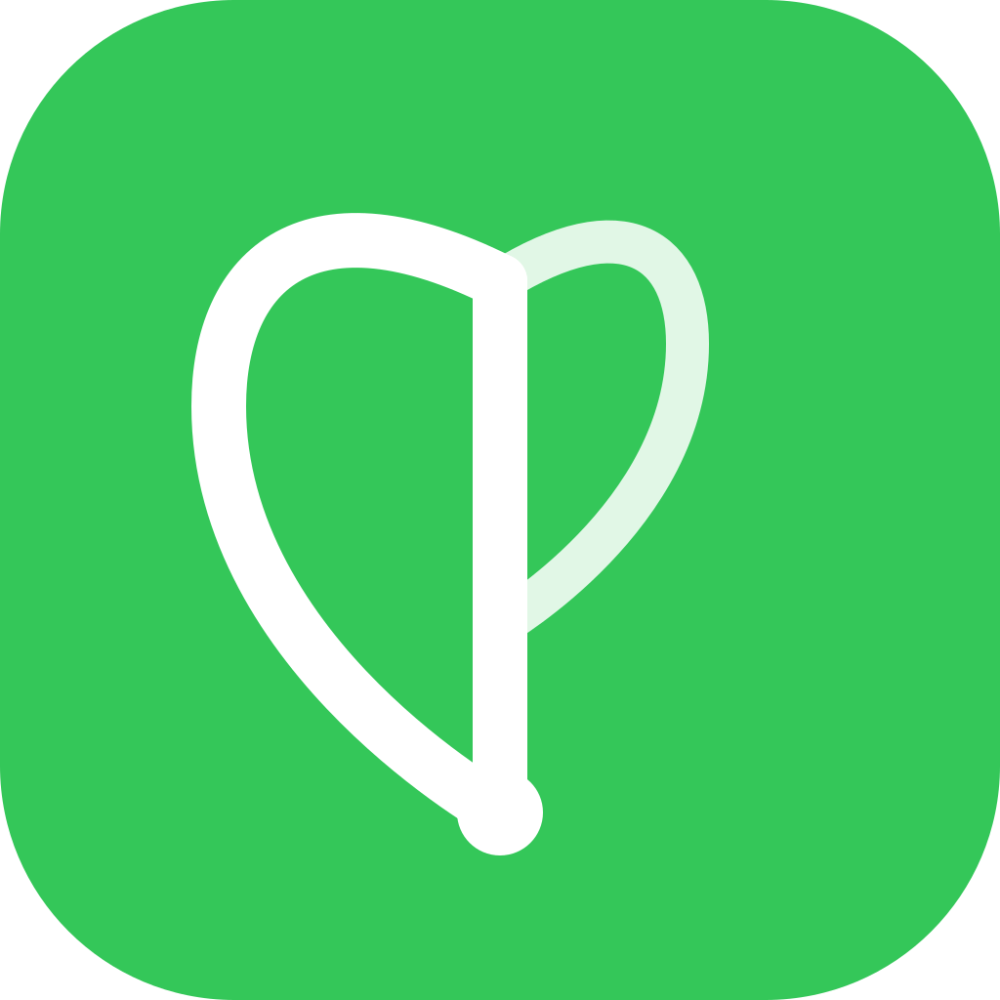

Things I've
actually shipped.
Three full projects, built solo from concept to production — a cloud-hosted AI platform, an AWS video streaming service, and the site you're on right now.
MyTube is a full video-sharing platform — uploads, playback, search, channels, comments, and reactions. The interesting part isn't the front end. It's what happens after someone hits upload. A raw video file is useless until it's been transcoded into multiple resolutions, stored durably, and served from an edge network close to the viewer. That's the problem I actually wanted to solve.
The pipeline is event-driven. Uploads go directly to S3 using presigned URLs, which keeps large files off my application servers entirely. That upload fires an EventBridge event, which triggers MediaConvert to transcode the video into multiple renditions. When the job completes, another event updates the database and marks the video ready. Nothing polls, nothing blocks, and each stage can fail and retry independently without taking the rest of the system down.
Delivery runs through CloudFront so playback starts fast regardless of where the viewer is. Auth is handled by Cognito with JWT verification on every protected route. Metadata, channels, comments, and reactions live in PostgreSQL on RDS, with full-text search built directly into the database rather than bolted on as a separate service. The whole front end is Next.js and TypeScript.

Forage started as a question: why does tracking what you eat feel like filing taxes? Every app I tried was either buried in manual entry or gave vague AI summaries that weren't actually useful. I wanted something that felt like talking to a nutritionist — fast, specific, and smart about what you're actually putting in your body.
I built the entire thing solo. The app sends natural-language food entries to Anthropic's API, extracts macros and micronutrients, and maps them against a user's daily targets. Meal data lives in Supabase on PostgreSQL, with schemas and REST API workflows designed to support flexible per-meal logging, running daily totals, user activity, and progress tracking across multiple users.
The front end is Next.js and TypeScript. I focused heavily on the interface — making the experience feel fast and uncluttered rather than clinical. The chat input handles everything from a single food item to a full meal description, and the React dashboards surface your day's progress and trends at a glance without requiring you to dig. Containerized with Capacitor for reproducible deployment and shipped on Vercel with continuous delivery from GitHub.
I had two options: use a template or build something I'd actually be proud of. The portfolio is pure HTML, CSS, and vanilla JavaScript — no framework, no build step, no dependencies. Every animation, every layout, every interaction is hand-written. The point wasn't to prove I can do it without React. The point was to fully own every line.
The design system is built on a set of CSS custom properties — a dark navy base, a blue-to-purple gradient that runs consistently through type, borders, and interactive states, and a type scale using Space Grotesk, Inter, and DM Mono. The site uses a 12-column CSS Grid for the bento layout on the homepage and a custom two-column grid for the education and project cards.
Interactions include a letter-by-letter text scramble on the hero headline, magnetic button physics (cursor-aware transform offset), a looping marquee ticker, and an IntersectionObserver-based scroll reveal. The nav collapses to a hamburger on mobile. Six pages total, all consistent in structure and style without a single shared template engine.